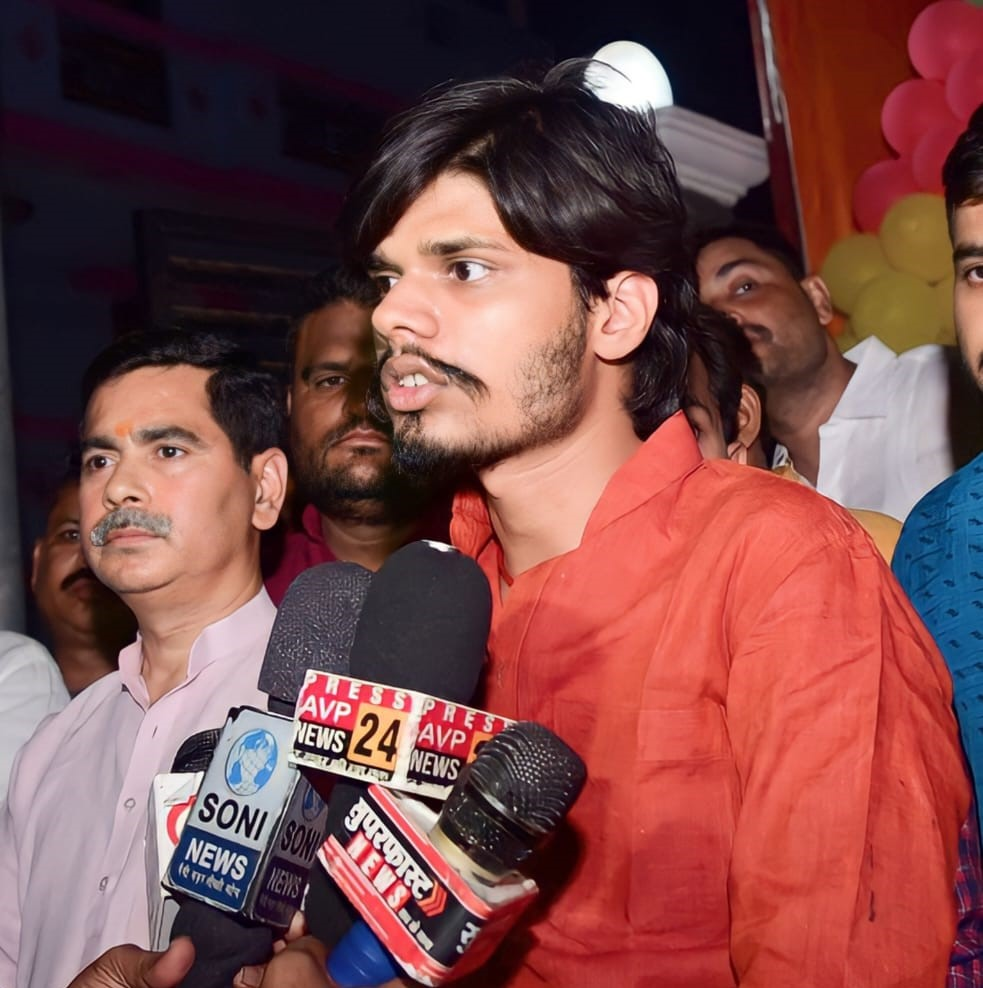
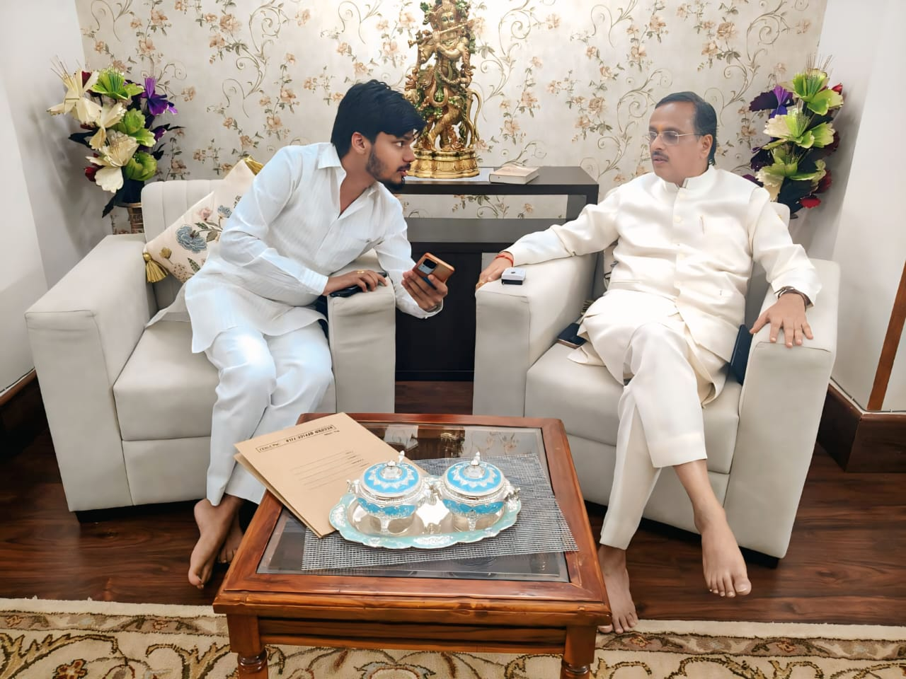
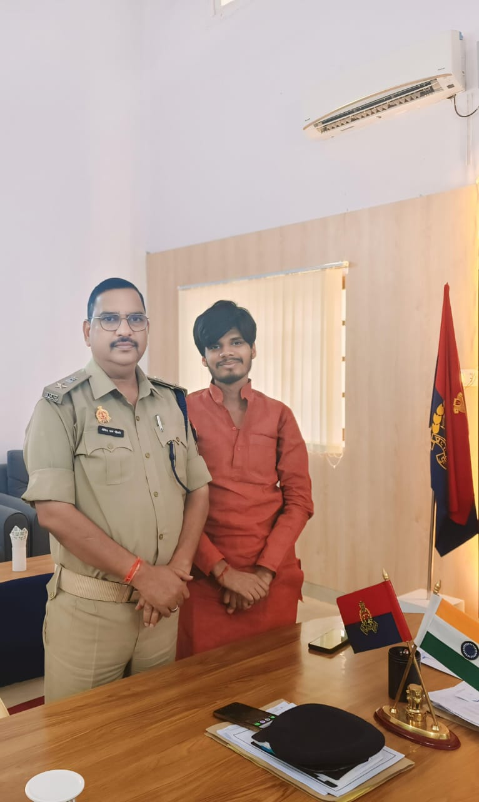
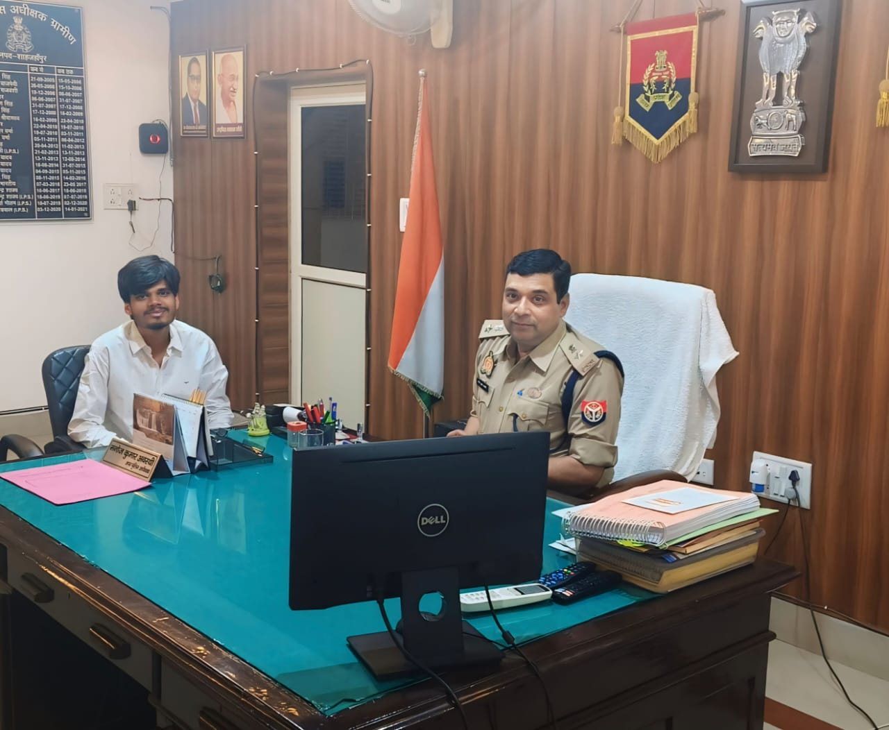
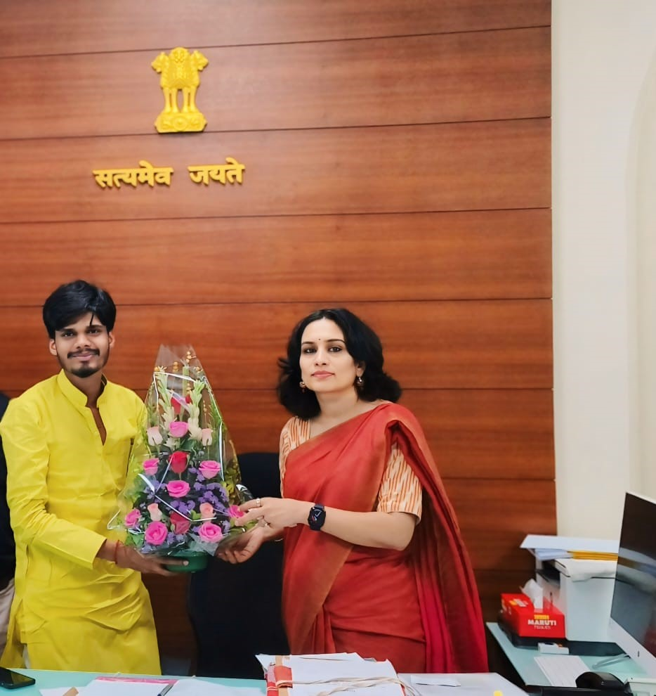
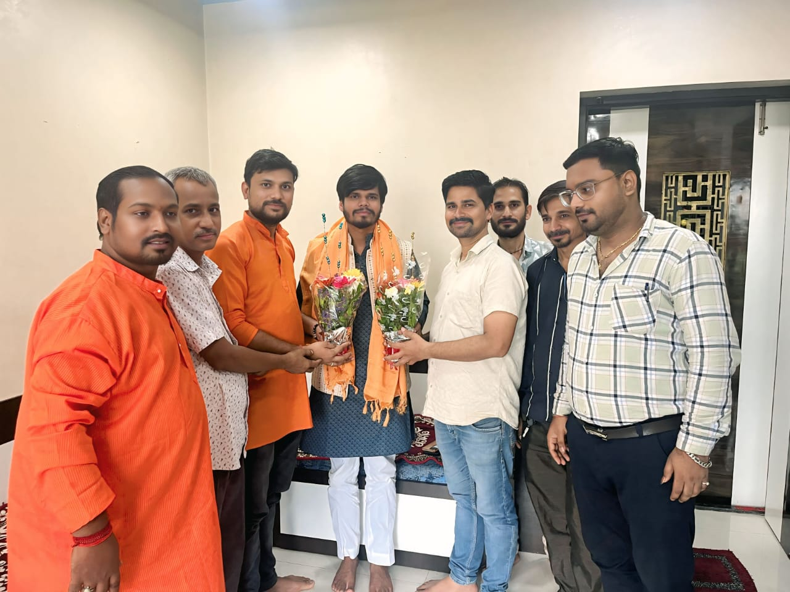
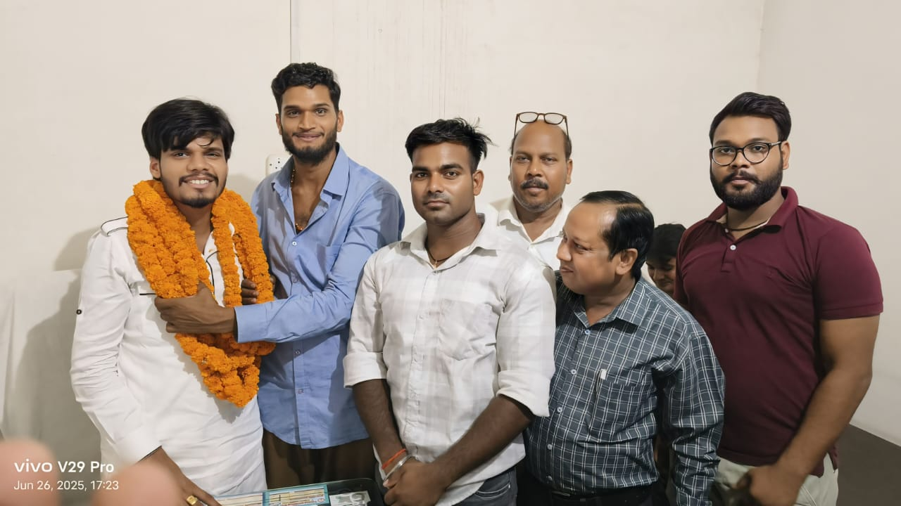
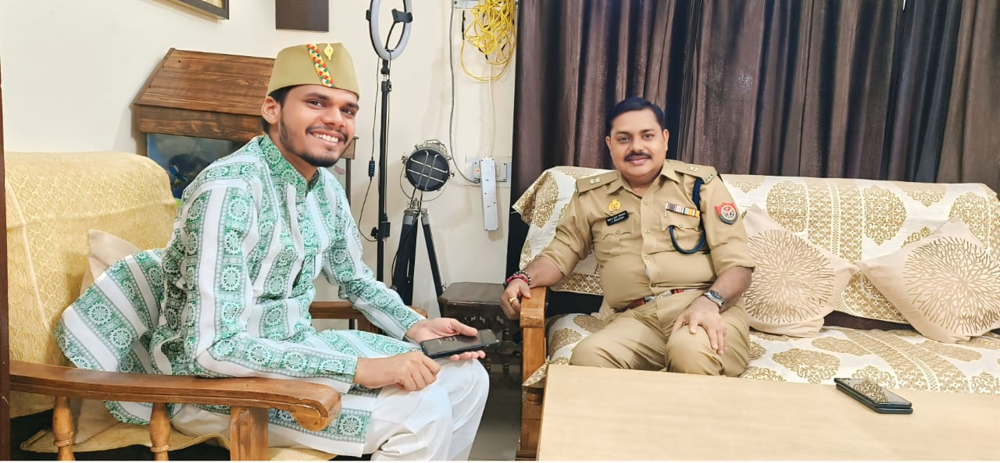

नवीनतम समाचार

हिंदू युवा चेतना महासभा के आगामी कार्यक्रम से राज्यपाल राजस्थान श्री हरीभाउजी बागड़े जी को अवगत कराते श्री करुणेश पांडेय राष्ट्रीय संयोजक |

महामहिम राज्यपाल एवं पूर्व केंद्रीय मंत्री कलराज मिश्र जी से भेंट कर कार्यक्रम हेतु आमंत्रित करते हुए ।

कैबिनेट स्वास्थ एवं कानून मंत्री बिहार मंगल पांडेय की को संगठन के कार्यों से अवगत कराते हुए ।

संगठन के विषय में प्रेस वार्ता करते हुए |

उत्तर प्रदेश के पूर्व उपमुख्यमंत्री एवं राज्यसभा सांसद डॉ दिनेश शर्मा जी को संगठन के कार्यों से अवगत कराते श्री करुणेश पांडेय जी

उत्तर प्रदेश के उपमुख्यमंत्री ब्रजेश पाठक जी को सामाजिक समस्याओं से अवगत कराते श्री करुणेश पांडेय।

डीसीपी कानपुर नगर, दीपेंद्र नाथ चौधरी जी से भेंट कर कानपुर की समस्याओं से अवगत कराते श्री करुणेश पांडेय।

पुलिस अधीक्षक कानून एवं व्यवस्था उप्र, श्री मनोज अवस्थी जी IPS से संगठन के पदाधिकारियों की समस्याओं से अवगत करा तत्काल निराकरण करते हुए

महाराष्ट्र कैडर की IAS निधि चौधरी जी से हिन्दू समाज के संबंध में चर्चा करते राष्ट्रीय संयोजक श्री करुणेश पांडेय।

मुंबई पहुंचने पर राष्ट्रीय संयोजक श्री करुणेश पांडेय का स्वागत करती महाराष्ट्र टीम।

हिंदू युवा चेतना महासभा द्वारा आयोजित कार्यशाला में शिकरत करने पहुंचे राष्ट्रीय संयोजक श्री करुणेश पांडेय (जनपद पुणे ग्रामीण)

जनपद कुशीनगर पहुंचने पर राष्ट्रीय संयोजक श्री करुणेश पांडेय का स्वागत करते कार्यकर्ता ।
